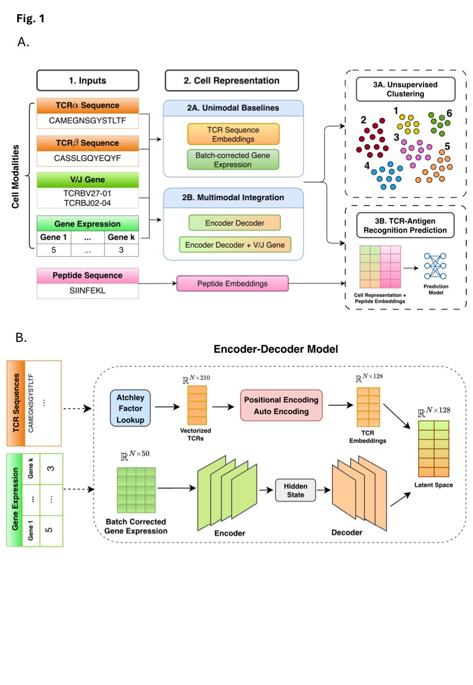

Sarah Li
Data scientist and ML engineer with experience across deep learning, statistical modeling, NLP, and computer vision — from research prototypes to working systems.
Experience
ML research across multiple projects: multimodal deep learning for TCR-antigen prediction (co-first author, submitted to Nature Communications), audio-based disease screening across 5 countries, and survival modeling across 7 multinational clinical trials.
Grade assignments and support weekly lab sessions for a graduate ML course covering supervised, unsupervised, and deep learning theory and applications; provide written feedback to health data science students.
Built Python/OpenCV pipelines to spatially map and classify cells across 256×256 nanopore sequencing chip grids; automated Excel reporting, reducing the bioengineering team's manual review labor by >75% and accelerating experiment turnaround.
Ported deepfake detection model to macOS using Docker; resolved cross-platform build dependencies and replaced GPU operations with CPU alternatives.
Project Highlights

Honors & Awards
Publications & Presentations
Li S*, Le P* et al. ITGAP: Integration of TCR and Gene Expression for Antigen Prediction. Nature Communications (under review). (*co-first authors)
Li S et al. Smartphone Cough Acoustics to Predict Chest X-Ray Abnormalities Among Adults Evaluated for Tuberculosis.
Li S et al. AI-Driven Survival Prediction in Metastatic Prostate Cancer: Integrating PSA Kinetics and Genomic Data. BBSW (1st Place); UCSF Prostate Cancer Retreat (Podium); NCI/NIH ITCR Symposium.
Li S et al. Predicting Abnormal Lower Airway Disease using Cough Recordings. UCSF IGHS Retreat — Best Overall Poster.